|
|
Host Plant Threats
Diseases
Diseases are one of the limiting
factors for successful mulberry cultivation. Many diseases caused by fungi,
bacteria, viruses and nematode affect mulberry. These diseases are either air
borne or soilborne in nature, which reduce about 10-20% leaf yield besides
deteriorating the leaf quality. Foliar Diseases
1. Leaf spots: More than 25 pathogens are reported to cause leaf spot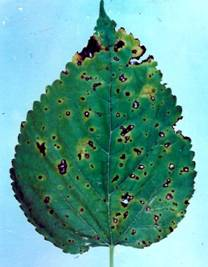 disease in mulberry. Among them, brown leaf spot is the most devastating one throughout the country. The disease is caused by a fungus, Cercospora moricola Cooke. belongs to the family Moniliaceae; order Moniliales of class Deuteromycetes.Occurrence: More prevalent during
rainy and winter seasons. Crop loss: 10-12% Symptoms: Brownish necrotic, irregular spots appear
on the leaf surface. Spots enlarge, coalesce and leave characteristic `shot hole’. Leaves become yellow &
wither off during severe stage. Disease cycle: The disease spreads primarily
with rain droplets through conidia. Conidia
are 3-7 celled, hyaline, elongate and filiform, with bulbous base and tapered
tips, measuring 70-30 µm in length. Conidia germinate and germ tubes enter
the leaf tissues directly through stomata or ruptured epidermis. Each
conidium gives rise to several germ tubes, which penetrate through stomata
and infect the plant. Temperature 24-26οC and relative
humidity above 60% is most congenial for disease development. Control:
·
Foliar spray of 0.2% Bavistin (Carbendazim 50% WP)
solution (dissolve 2 g Bavistin in 1 litre water). ·
150-180 liters of fungicide solution is required for
one-acre garden. Fungicidal spray should be taken up immediately after the
initial appearance of the disease (30-35 days after pruning/leaf harvesting).
Fungicide treated leaves can be fed to silkworm safely after 2-3 days of
spraying. In addition to C. moricola,
there are many other pathogens causing leaf spot disease. Black leaf spot
caused by a Deuteromyceteous fungus, Colletotrichum gloeosporioides
(Penzig) Penzig & Sacc. has recently become a serious threat to mulberry
in the southern tropics. The disease is
characterized by dark brown or black necrotic rectangular or polygonal
spots of 1-3 mm size. Because of small size of spots, this disease is often
mistaken with leaf rust. The fungus penetrates mulberry leaves through
stomata by the formation of specialized infection vesicles. Grey leaf spot is
another disease, which is most common in West Bengal, Bihar, Uttar Pradesh
and Karnataka. It is caused by Pseudocercospora mori (Hara) Deighton,
which belongs to class Deuteromycetes. Disease symptoms first appear on lower
surface of leaves as small gray to brown coloured hyphal mats and mildew-like
appearance which later appear as concomitant dark brown necrotic spots on
upper surface of the leaves. Besides fungi, Xanthomonas campestris pv. mori
Pammel (Dowson) has also been reported to cause leaf spot disease in
mulberry from various parts in 2. Powdery mildew: Powdery mildew is caused by a fungus Phyllactinia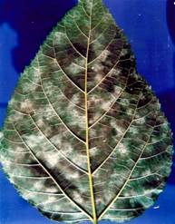 corylea (Pers.) Karst. belonging to the family Erysiphaceae, order Erysiphales of class Ascomycetes. It is also known as Phyllactinia moricola (P. Henn.) Homma.Pathogen: Phyllactinia
corylea Occurrence: During winter and
rainy seasons Crop loss: 5-10% and diseased
leaves have less moisture, protein contents and higher starch as well as
cellulose as compared to healthy leaves. Symptoms: White powdery patches appear on the ventral
surface of leaves and turn blackish brown in later stages. Disease cycle: The fungus is an
ectoparasite and reproduces by asexual and sexual methods. Asexual reproduction takes place by means of
conidia. Conidia are hyaline, unicellular, club-shaped, measuring around 28 x
70 µm. The disease is
mainly disseminated by wind current. Temperature ranging between 20 - 27 ºC
and RH 60-70 % are optimal for infection and disease development. Control: Foliar spray of 0.2 % Karathane (Dinocap)/
Bavistin. The treated leaves can be fed to silkworm safely after 2-3 days of
spraying. 3. Leaf
rusts: Mulberry
is attacked by several rust pathogens. Among them, black rust and red rust
are more prevalent in a) Black rust: The pathogen of black rust is Cerotelium fici Cast. (Arth.)
belonging to the family Uredinaceae; order Uredinales under the class
Basidiomycetes. It is also known as Peridiospora mori Barclay. The disease was first reported from Crop loss: 10-15% Symptoms: Circular pinhead size
brown eruptive lesions appear on the leaves. Later, leaves become yellow and wither off. 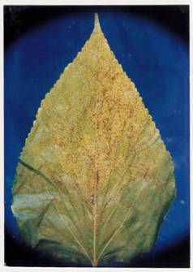 Disease cycle: The causal pathogen is
an obligate parasite and micro cyclic rust. The infection takes place through
uredinio spores (uredo spores), which disperses through water droplets and
wind current. Uredinio spores are oval to globose, echinulated (spiny), measuring 15(24)-18(30) x 12-15 µm. They
penetrate the leaf directly through cuticle/ epidermis and infect the plant.
The pathogen overwinters in the form of mycelia, uredia and uredinio spores
in dead plant parts and weeds. Control:
b) Red rust: Red rust disease caused by a Basidiomyceteous fungus, Aecidium
mori (Sydow & Butler) Barclay, is observed in northern parts of the
country, like Himachal Pradesh, Uttar Pradesh, West Bengal, North-Eastern
region and also in Karnataka. It appears
during rainy and winter seasons and reduces about 8-10% leaf yield.
The disease affects young buds, leaves, petioles and shoots. The affected
buds become swollen and curl up in abnormal shapes with many protruded golden
yellow spots. On both the surfaces of the affected leaves, numerous small,
round, shiny-yellow coloured protruded spots appear in the form of powdery
substance. If the shoot and petiole are affected, the fungus spreads through
vascular bundles. It spreads through aeciospores that are dispersed by wind
and water current. Aeciospores produce germtubes, which enter the leaf tissues
either directly through leaf epidermis or stomata. 4.
Leaf blights: Both fungi as well as bacteria cause leaf
blight in mulberry. The fungal leaf bight is prevalent mainly in tropical
regions whereas bacterial blight is worldwide in occurrence. a) Fungal leaf blight: Fungal leaf blight is caused by the various species of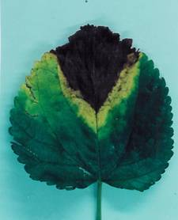 Alternaria, Fusarium, Helminthosporium and Colletotrichum. Among them, Alternaria and Fusarium species are most commonly observed to cause leaf blight in mulberry. Fungal leaf blight causes leaf yield loss up to 10% in addition to alterations of leaf quality.1. Alternaria / Fusarium leaf blight: Occurrence of Alternaria leaf blight was
first reported on mulberry seedlings. Later, occurrence was noticed in
established mulberry gardens. The disease is caused by Alternaria alternata
(Fr.) Keissler, which belongs to the order Moniliales; family Dematiaceae of
class Deuteromycetes. The disease is more prevalent in Karnataka and Tamil
Nadu through out the year but the severity of disease is noticed during
summer season.
Various
species of Fusarium cause leaf blight in mulberry. However, in Occurrence: Summer and rainy seasons. Crop loss: 10-12 % Symptoms: The disease appears
as browning/ blackening of leaves starts either from the leaf tip or edge of leaf
lamina. In case of twig blight, affected branches become feeble and fragile
with irregular black lesions on the stem surface in certain cases, which
later coalesce and spread longitudinally resulting in splitting and drying of
the branches. Disease Cycle: The fungus hyphae give rise to simple
conidiophores, which produce conidia Each conidium gives rise to several germ
tubes, which grow towards the stomata and penetrate the mulberry leaf
directly through stomata without developing appressoria or any other
specialized penetration structure. The pathogens are generally a soil
inhabitant and survive in crop debris in the form of chlamydospores. Control: Foliar spray of 0.2% Dithane M-45 (Mancozeb
75 % WP). The treated leaves can be fed to silkworm safely after 2-3 days of
spraying. 2. Helminthosporium
leaf blight: The disease is caused by Helminthosporium
tetramera Mc. Kinney, which belongs
to class Deuteromycetes and reported from
Karnataka. The occurrence of
this disease at present is marginal but in future it may become severe. The
intensity of disease is noticed during rainy season and leaf yield loss is up
to 6%.
The dried portions turn in to ash colour. The withering extends irregularly
throughout the leaf surrounded by a thin margin of light brown colour. Rain
splash, wind and insects disseminate the pathogen. The fungus overwinters in crop debris in the form of chlamydospores. It
produces the conidia on conidiophores. Each conidium gives rise to more than
one germ tubes, which penetrate the mulberry leaf through stomata or reptured
epidermis. b) Bacterial leaf blight: The disease is caused by a bacterium, Pseudomonas syringae pv. mori (Boyer and Lambert) Young et al. belonging to the order 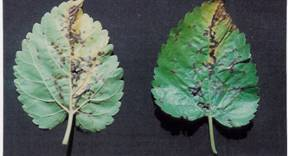 Pseudomonadales of class Schizomycetes. There are four types of bacterial diseases reported in mulberry viz., leaf blight (P. syringae pv. mori), leaf spot (X. campestris pv. mori), shoot soft rot [E. carotovora. var. carotovora) and leaf scorch (Fastidious Xylem inhabiting bacteria). Among them, inOccurrence: Rainy and winter
seasons Crop loss: 5-10% Symptoms: Numerous blackish
brown irregular water soaked patches appear on the leaves resulting in
curling & rotting of leaves. Disease cycle: Soil is the primary source of infection. The
secondary infection takes place through irrigation and cultivation practices.
Bacterium is gram negative, rod-shaped, motile and measuring 1.4 x 3.2 µm in
size. Pathogen invades through stomata and wounds caused by wind, rain and
insect attack and infect the plant. It overwinters for longer duration in
soils and dead roots and leaves. Control: Spraying of Streptomycycin (0.2%) or Dithane M-45
(0.2%). Soil Borne
diseases
Soilborne diseases pose a serious
problem for mulberry cultivation during nursery plantation and established
gardens, which cause severe loss in revenue generation of mulberry growers as
compared to foliar diseases. Various
soilborne diseases affect mulberry. Among them, root knot and root rot affect
the established plantation resulting in severe loss in leaf yield apart from deterioration in leaf
quality, which is a prerequisite in successful sericulture to get the good
quality of cocoons. Besides, stem-canker, cutting rot, collar rot and die-back, affect the initial establishment
and survivability of mulberry plantation in nursery. Nematode/Root knot disease: More than 42 species of nematode belonging to 24 genera are reported to cause the different diseases in mulberry all over the world. All the six major species of Meloidogyne viz., M. incognita, M. javanica, M. hapla, M. arenaria, M. arenarithamsi and M. mali have been reported to cause disease in mulberry Among them, Meloidogyne incognita (Kofoid & White) Chitwood, a non-segmented worm belonging to the Family Heteroderoidea, Order Tylenchida of Class Secerentia under Phylum Nematoda causing root knot disease is very 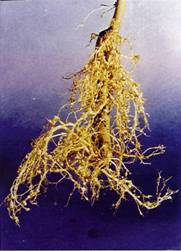 serious and chronic to the mulberry. The disease is widespread and more prevalent in sandy soils under irrigated farming system. M. incognita has a wide range of host plants, which infects more than 2000 species of plants including almost all agricultural, horticultural, oilseeds, ornamentals, plantation crops, etc. It is more dangerous to mulberry not only because of the direct damage to the crop but also it predisposes the plant to various soilborne plant pathogens. The root knot nematode is reported from almost all the countries where mulberry is cultivated. The dynamics of established nematode population (M. incognita) at various depths of rhizosphere soil viz., 0 - 15; 15 - 30; 30 - 45; 45 - 60; 60 - 75 and 75 - 90 cm indicate that there is significant increase in density of nematode population up to the depth of 15 - 30 cm, and gradually decreases up to 75 - 90 cm depth. Further, the distribution of nematode population was very high at rhizosphere region as compared to intra-row (space between plants) and inter-row regions i.e., space between rows. Such information may help to formulate the appropriate strategies for disease management. The disease spreads primarily through contaminated soil, farm implements and run-off irrigation water from infected plot to the other plot. Plantation of infected saplings, cultivation of other susceptible crops along with mulberry, and growth of some susceptible weeds in and around the mulberry gardens acts as the secondary sources of infectionCrop loss: More than 12% Symptoms: Yellowing and necrosis
of leaves, stunted growth of plant and presence of galls on root system. Disease cycle: The nematode passes through egg,
larva and adult stages. The
second stage larvae invade the roots through root tips. Usually, four moults
occur to complete the life cycle, first moult occurs within the egg, which
hatches to form the second stage larva. The larvae inside the roots undergo
three moults and develop into mature adults. The reproduction takes
place mostly by parthenogenesis and very rarely by sexual means, as
occurrence of males is very rare. Each female lays 300-500 eggs covered with gelatinous substance
called as egg mass. The nematode produces six generations within a year and
life span is completed within 30-40 days. Control:
Root rot diseases: Root
rot is the most dangerous disease due to its epidemic nature and potentiality
to kill the plants completely and poses a serious problem during mulberry
cultivation in almost all the sericultural countries. Various types of the mulberry root rot diseases have been reported
from all over the world. These are dry
root rot, black root rot,
charcoal root rot, violet root rot, white root rot, Armilaria
root rot and bacterial root rot.
Among them, the dry (Fusarium),
black and charcoal root rots are reported in Dry (Fusarium)
root rot: In 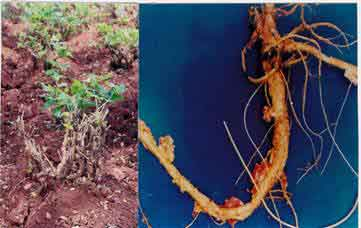 white root rots damage the mulberry (Ragaswami et al., 1976) but various surveys indicate that the disease is dry root rot caused by Fusarium solani (Mart.) Sacc. and F. oxysporum Schlecht., (Philip et al., 1995, 1997). Both these pathogens belong to the Family Tuberculariaceae, Order Moniliales of Class Deuteromycetes under Division Mycota.Occurrence: Through out the year
in all types of soils. Crop loss: 12-14 % Symptoms: Sudden withering and
defoliation of leaves and rotting of root followed by death of plants in
isolated patches. Disease
cycle: Pathogens produce numerous micro and macro conidia and
chlamydospores. The chlamydospores
can survive for longer period in plant debris in the soil even in the absence
of the host plants. The disease is favored
by soil temperature in the range of 26 - 35ºC, soil moisture below 40% and pH
of 5 - 10. Incidence of nematodes enhances the intensity of root rot as
nematodes cause wounds on mulberry roots while feeding or penetration, which
acts as entry points for soilborne fungi like Fusarium species. Control:
Root dipping of saplings in 0.1% Bavistin solution (1 g dissolve in 1 liter water)
and planting in pits dusted with 10 g of Dithane M-45 followed by irrigation. Integrated method: The diseased plants are to be uprooted and burnt. About 10 g of Dithane M-45 per pit should be applied and plant the new saplings 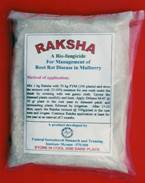 after soaking in Dithane M-45 (0.1%) solution for 30 minutes. After 15-20 days, the Raksha mixture at the rate of 500g/plant in the root zone has to be applied and irrigated. The Raksha mixture can be prepared by mixing of 1 kg Raksha with 50 kg farmyard manure (sufficient for 100 plants) and added 8-10 liters of water to maintain the 15-20 % moisture. The mixture should be stored under shade for about one week by covering with gunny cloth for enhancing the multiplication of Trichoderma colonies. Application of Raksha should be continued for one year at an interval of 3 months. T. harzianum does not show any residual toxicity on mulberry and silkworms.Black root rot: Botryodiplodia
theobromae Pat. [syn. Lasiodiplodia theobromae (Pat.) Griffon & Maubl.]
belonging to the family Sphaeropsidaceae; order
Sphaeropsidales of class Deuteromycetes causes black root rot disease in mulberry. The disease is prevalent in Karnataka and Tamil Nadu. The above ground level symptoms appear as sudden wilting and
defoliation of leaves while below ground symptoms include decaying of roots.
Only few branches are affected initially and as disease become severe
complete drying of all branches occurs. Under advanced stage, the grayish
black mycelium of pathogen is observed on infected roots resulting the death
of the conducting tissues leading to death of plant. Rotting and peeling of
bark some times extends up to the stem region near the soil line. The disease can easily be controlled
through spray of 0.2% Bavistin or Captan 50% WP on the stumps immediately
after pruning followed by soil application at the rate of 8 kg/acre.
The soil application should be given after 10 days of aerial spray. Charcoal rot: It is caused by Macrophomina phaseolina (Tassi.) Goid belonging to the family Sphaeropsidaceae;
order Sphaeropsidales of class Deuteromycetes. In Violet root rot: The disease is caused
by Helicobasidium mompa Tanaka belongs to the order Tremellates of
class Basidiomycetes. It is more prevalent in White root rot: White root rot is caused by Rosellinia necatrix Berl. ex. Prill. belongs
to the order Sphaeriales of class Ascomycetes. It is also prevalent in Bacterial root rot:
The disease is caused by a
bacterium, Pseudomonas (Ralstonia) solanacearum (Smith)
Dowson is known to occur sporadically in Besides these, various other pathogens/factors, which cause
root rot disease, are also reported on mulberry. These pathogens occur
occasionally and restricted to certain areas only. Diplodia morina
Syd. and Helicobasidium
compactum Boedijin have also been reported to cause root rot in mulberry from
Diseases of
nursery In Cutting rot Fusarium solani (rotting of whole cuttings and decaying of bark) Stem-canker Botryodiplodia theobromae (presence of
greenish-black eruptions on cuttings) Collar rot Phoma
sorghina/P.
morourm (rotting of cuttings
near soil line) Die-back Botryodiplodia theobromae (sudden withering
and death of saplings starting from apex to downwards)
Crop loss: 30-35 % mortality of
cuttings and saplings during initial establishment. Disease cycle: B. theobromae
produces numerous dark coloured bi-celled and ovoid conidia in fruiting
bodies known as pycnidia while F. solani produces numerous small,
oval, non-septate micro conidia, 2 - 3 septate macro conidia and thick walled
chlamydospores. However, Phoma spp. produces pycnidial type of
fructification consisting of numerous rounded, minute and un-septate conidia. Fusarium
and Phoma spp. invade mulberry stem-cuttings/saplings through
cut-ends/wounds and cause cutting rot and collar rot diseases, respectively. Die-back disease caused by B. theobromae kills the mulberry saplings,
as the fungal mycelium seems to reach the phloem of young mulberry plants by
invading cortex and cambium cells. The cell contents of affected tissues are
exhausted resulting in death of the saplings. Control: Soil application of biofungicide
Nursery-guard (Trichoderma
pseudokoningii) after mixing with FYM (1:60) @ 2 kg/m2 before
plantation later plant the cuttings after soaking in Dithane M-45 (0.1%)
solution for 30 minutes. Pests Like most of the other economic plantations and field crops,
mulberry is prone to the attack of a varied pest complex (more than 300 insect and non-insect pests)
belonging to a large number of insect orders. Information on different pests
of mulberry are given below: Mealy bug causing Tukra: It is a major pest; popularly known as ‘hard to kill’ pest. Commonly
called as ‘Pink mealy bug’ the scientific name is Maconellicoccus
hirsutus, belongsingto the order Homoptera and family
Pseudococcidae. Period of
occurrence: The pest has been
reported to occur throughout the year
but the incidence is high in summer
months. Life-cycle: Fecundity: 350-500 eggs Hatching: 6-9 days Nymphal period: 23-27 days Females have 3 nymphal instars while male have 4 nymphal instars. Longevity: Male 3-4 days;
Female 10-12 days No. of generations: As many
as 15 generations in a year. Alternative
host plants: The bug feeds on a variety of plants. . There are 346 host
plants recorded so far. The major alternative host plants are hibiscus,
citrus, coffee, sugarcane, annonas, guava, mango, okra, teak, pigeonpea,
grapevine, maize, chrysanthemum, beans, cotton, soybean and many other
plants. Its wide host range favours rapid spread and make the control
measures difficult. Type of damage and symptoms: 1. The leaf yield is
tremendously reduced and leaf is low in nutritive value. 2. The leaves are wrinkled,
thickened, become dark green in colour and then turn into yellowish. 3. Heavily infested plants have
shortened internodes leading to resulting into rosetting or a ‘bunchy top’ appearance.
The symptom is generally called as ‘tukra’. 4. A heavy, black shooty mold
may develop on an infested plants leaves and stem as a result of heavy honey
dew secretions by the mealybug. 5.
Leaf yield loss to the tune of
4500 kg/ha/yr has been reported.
Management:
Mechanical: ·
Removal of infested portion by top clipping and burn it as and
when infestation noticed. ·
Prevent further mealybug infestation for better maturity of
leaf suitable for late fifth instar silkworm larva. ·
After every leaf harvest remove the left over leaf and apical
buds in order to prevent future infestation, activation of axillary buds and
better development of secondary shoots. Chemical: ·
Spray of 0.2% DDVP (76% EC) for
2 to 3 times with 10 days interval. 2.63 ml/lr. Safe period: 15 days. Biological: ·
Release of predators either Cryptolaemus montrouzieri-
250 adults/acre in two split dosages: Oct-Nov. and Jan-Feb. or Scymnus
coccivora- 500 adults/acre. The biocontrol agents should be released in late
evening hours.
Mulberry leaf roller: The leaf roller, D. pulverulentalis (Hampson)
(Lepidoptera:
Pyralidae) is
reported to infest mulberry
plantation in Karnataka, Andhra Pradesh and Tamil Nadu. The infestation
causes considerable reduction in leaf yield resulting in economic loss to
sericulturists. The infestation is
observed mainly in the chawki garden ( 15 days after pruning/leaf harvest).
The pest is known to infest all the commercial mulberry varieties. Period
of occurrence: The infestation is
observed on the onset of monsoon i.e. from June and lasts upto February.
However, the peak period of infestation is September-November. 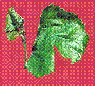 Nature of damage and symptoms: The target area of the leaf roller is the apical portion of the mulberry shoot. The young caterpillar binds the leaflets together by silky secretion and settles inside and devours the soft green tissues of the leaf surface. Grown up caterpillars feed on tender leaves and their faecal matter can be seen on the leaves below the affected portions.Life Cycle:
The life
cycle of D.pulverulentalis
is comparatively shorter than
other prevailing pests in mulberry
gardens which makes the
pest to proliferate fast resulting in
completion of more generations
in a year. The moths are greyish brown in colour and measures
about 1 cm in length. Wings
have brownish wavy stripes. The moth
lays one or two eggs on the apical portion of the shoot. Each female lays
100-250 eggs. Incubation period of egg is 2-3 days. There are three larval
instars and the body of grown up caterpillars are greenish brown. The head is
black in colour. 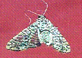 The larval period lasts for 8-12 days. Pupae are brown in colour and the pupation takes place in soil. The pupal duration is 7-9 days. The pest completes its life cycle in 17-24 days.Management: As tackling
of this pest is of immense
importance the Pest Management Laboratory, Central
Sericultural Research and Training Institute, Mechanical:
Clipping and destroying the pest
infested parts of mulberry ; Flood
irrigation and deep ploughing to kill
pupa; use of light traps to attract and kill adults are some of the mechanical
methods. Chemical :
Foliar application of 0.076% DDVP (Dichlorvas) 76% EC
(one ml in one litre of water)
10 days after pruning/leaf harvest is found ideal.
If infestation persists, repeated (2-3) sprays are required. The leaf can be utilised for silkworm rearing 7 days after DDVP
application. Spraying of commercial Neem pesticide (0.03% AZ) 0.05% in 200
liter with safe period of 10 days is also recommended. Biological: Release
of Trichogramma chilonis -
an egg parasitoid @ 25,000 acre/week and Tetrastichus howardii- a pupal parasitoid @ 25,000 acre/week has
been recommended.
Integrated Approach:
For effective management of the pest, an integrated
method comprising of all the measures described as above has been developed and
the schedule is given below:
Among the leaf
eating pests of mulberry, the 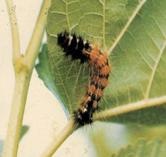 Spilosoma obliqua assumes greater importance owing to its voracious feeding habit which causes extensive damage to mulberry crop.Period of occurrence: In recent years, sporadic
occurrence of this pest is known to cause considerable loss in the
mulberry leaf yield in certain parts of
Karnataka and Andhra Pradesh.
Prevalence of the Life-cycle: Adults are light brown in
colour with brick red abdomen, having
dark row of spots laterally and dorsally. Each adult lays 1000 - 2000 eggs in
batches on the ventral surface of the leaf
The eggs hatch in 5-7 days. The young larvae are gregarious in nature.
The grown up larvae posses prominent setae (hairs) dorsally and laterally.
The anterior and posterior regions are
black in colour while rest of the body is reddish brown. The
caterpillars moults six times and the larval duration lasts for 28-30 days.
Pupation occurs in soil in a loose cocoon-like structure. The pupa is brown
in colour and its period lasts for 12 -14 days. The life cycle is completed in about 48 days. Type of damage and symptoms:
The young caterpillars feed on chlorophyll layer of the leaf
exposing the veins which impart dried/dead appearance to the leaves. The
grown up larvae feed on the entire leaf rendering the branches without
leaves. Management: ·
Mulberry
gardens are to be observed regularly for collection and destruction of egg
masses and also gregarious young caterpillars. ·
Ploughing
the caterpillar infested gardens to a depth of about six inches to expose the
pupae to scorching sun or to the sight of its natural enemies like birds.
Besides, flood irrigation of the mulberry gardens will also help in killing
the pupae. ·
Preparation
of trenches (1 ft depth and 1 ft width) around the mulberry plot and place
poisonous baits distributed evenly all
around the mulberry plot inside the
trenches ( Preparation of baits:
Dissolve 2 kg of Jaggery in 1 lit of water , add 20-25 kg of saw dust or wheat bran + 3 lit water. To this add 250 ml Nuvacron,
mix well and allow it to ferment for 1
day).to check the migration of
caterpillars from one garden to other. ·
Spray
0.15% DDVP to kill the caterpillars. Safe period : 15 days. ·
Release Trichogramma chilonis an egg
parasitoid @ one trichocard per acre/week. Each trichocard should be cut into 12-16 pieces and staple them below
mulberry leaf uniformly in entire mulberry garden for effective
parasitisation of host egg . ·
Installation
of light traps to attarct adults and killing them using
0.5% soap solution in basin near the light source. Change the soap solution
once in three days. Thrips, Pseudodendrothrips mori (Thysanoptera:
Thripidae): Though it is a major pest in Tamil Nadu and minor pest in Karnataka and 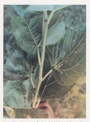 Andhra Pradesh. It is popularly called as thunder flies and storm flies.Period of
occurrence: It is reported
throughout the year but the infestation is
severe during summer (Feb- April). Life-cycle: Fecundity: 30-50 eggs Hatching: 6-8 days Nymphal period: 15-18 days Longevity: Male 10-14 days; Female 15-20 days Alternate host plant: Ficus Type of
damage and symptoms: Nymphs and adults of thrips lacerate the epidermal leaf tissues
and suck the oozing cell sap leading to damage of guard cells and finally
drying of the leaves. Affected leaves
show streaks in the early stages and blotches in the advanced stage of the
attack. Management:
Mechanical: Use of
sprinkler irrigation. Chemical: Spray of
0.02% DDVP twice at weekly intervals has been recommended with safe period of 6 days. Biological: Ladybird
beetles , Menochilus sexmaculatus and
Scymnus coccivora, anthocrid Orius sp. and
neuropterans were observed to feed on thrips in the field and
laboratory. Cutworm, Spodoptera litura (F.)
(Lepidoptera: Noctuidae): It is a minor pest of mulberry. Period of
occurrence: Its occurrence is
predominant during the months of
August- February. Life-cycle: Fecundity: 200-300 eggs Hatching: 4-5 days Larval period: 14-21 days Pupal period: 10-14 days Longevity: Male 14-17 days;
Female 18-21 days Type of
damage and symptoms: The larvae attack the shoot
of young plants and cut them. The gardens having young plants are found
without branches. Management: Physical/ mechanical:
Installation of Light trap and pheromone trap (‘spodolure’) has been
found suitable. Chemical: Spray
of 0.025% Malathion has been recommended with safe period of 10 days. Jassid, Empoasca
flavescens F. (Homoptera: Cicadellidae): 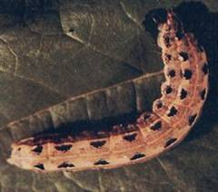 It is also a minor pest popularly called as leaf hopper.Period of
occurrence: It is common during the
summer months. Life-cycle: Fecundity: 20-30 eggs Hatching: 4-7 days Nymphal period: 19-27 days Longevity: Male 6-9 days; Female 10-15 days. Alternate
host plants: Several malvaceous plants like lady’s finger, cotton, castor,
brinjal, green and black gram and cucurbits. 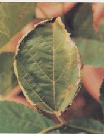 Type of damage and symptoms: The most prominent symptom is characteristic ‘hopper burn’ yellowing of leaves all along the leaf margin and reduces the plant vitality and yield.In the final stages of the attack the leaf becomes cup shaped and withers off prematurely.Management: Physical/ mechanical: Installation of Light trap and
sticky traps are recommended. Chemical: Spray
of 0.1% Dimethoate or 0.05% DDVP has been recommended for its control. Biological:
Reduvid and Pentatomid predators are observed to feed on both nymphs
and adults. Spiraling
White fly, Aleurodicus dispersus (Russel)(Homoptera: Aleyrodidae) 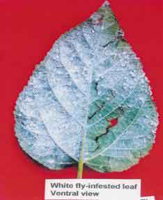 Though a minor pest, its severity has been of late reported from Tamil nadu andPeriod of
occurrence: March-June;
October-Dec. Prolonged dry spell followed by the hot humid weather favours
the whitefly flare up. Life-cycle: Fecundity: 40-70 eggs Hatching: 4-6 days Nymphal period: 14-21 days Longevity: Male 4-8 days;
Female 10-14 days Alternate
host plants: The spiraling whitefly
has been recorded on 38 genera of plants belonging to 27 plant families and
more than 100 species. Specific plants that are attacked include Guava,
Cassia, Abutilon, annona, banana,
citrus, coconut, eggplant, Indian banyan,
mango, palm, papaya,
pepper, plumeria and rose. Type of
damage and symptoms: The majority of feeding
damage is done by the first three nymphal stages. Infest the lower surface of
leaves resulting in chlorosis, yellowing, upward curling of the leaves, leaf
fall and retardation of growth. The nymphs and adults remain on the lower
surface of the leaves and desap the plants. Continuous heavy feeding weakens
the plant. The damaged leaf become unfit for rearing silkworm. Management: Mechanical:
Collection and destruction of infested leaves. Cultural:
Adoptation of recommended spacing and fertilizer dose. Remove alternate wild host plants like Abutilon
and Cassia auriculata and other weeds from the field and
neighboring areas and reducing the activity and population buildup by fixing
yellow sticky trap. Chemical: Spray of
0.05% Dimethoate . Spray of
0.5% Neem oil mixed with 1 to 2 ml
soap solution at 1: 2 ratio. Scale
insect, Saissetia nigra (Homoptera Coccidae): 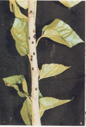 It is also a minor pest called as unarmoured scales and soft scales.Period of
occurrence: It is reported
throughout the year but becomes
severe during summer. Life-cycle: Fecundity: 500-800 eggs Hatching: 5-7 days Nymphal period: 19-28 days Females have 4 instars and
male have 3 instars. Longevity: Male 6-11 days;
Female 9-18 days. Alternate
host plants: The known alternate host plants are Citrus, croton,
chrysanthemum and banana Type of
damage and symptoms: Scales are similar in habit
to mealy bugs and feed on plant sap. They are usually found on the underside
of the leaves and stems. Management: Physical: Swapping with a blunt edge wooden plate to
dislodge the insect is recommended. Chemical: Spraying of 0.05% Dimethoate with safe period
of 10 days is recommended. Biological: Use of predators, such as the green lacewing,
and parasitic encirtid wasps. |
|||||||||||||||||||||||||||||||||||||||||||||